Altres possibilitats del full de càlcul
Tot seguit es presenten a nivell gràfic altres possibilitats del full de càlcul per treballar diferents tipus de continguts.
En aquestes presentacions no hi ha les explicacions de com fer aquestes activitats, però havent estudiat les funcions dels sis mòduls d'aquest curs i, sobre tot, de les possibles combinacions d'aquestes funcions, llavors es poden
portar a terme aquestes activitats.
Els graus
En aquesta activitat, es van augmentant els graus de la zona vermella així com es van fent clics a l'extrem esquerra de la barra de desplaçament. Evidentment, quan una zona augmenta els graus l'altra els disminueix, sumant entre
les dues zones els 360 graus. Aquesta activitat podria servir per treballar els angles complementaris i els suplementaris.
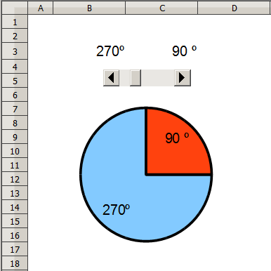
Ortografia
Aquesta activitat podria servir per treballar l'ortografia d'algunes de les lletres de l'alfabet. En aquest cas s'intenta treballar l'ortografia de la jota (j) i de la ge (g).
Partint d'aquesta activitat, també es podrien generar fitxes de paper per practicar l'ortografia que convingui. Les paraules es podrien presentar de manera aleatòria.
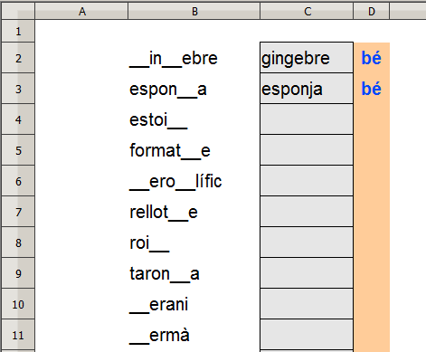
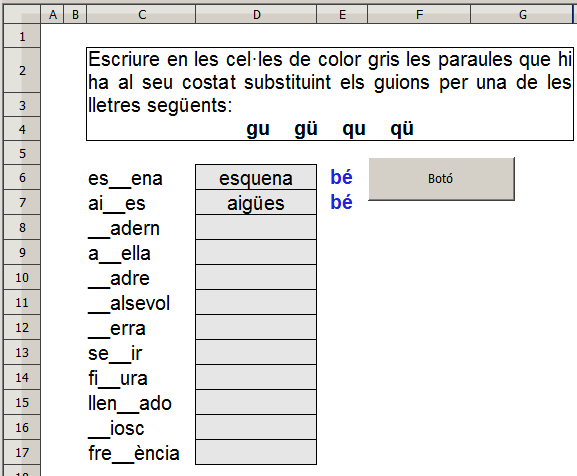
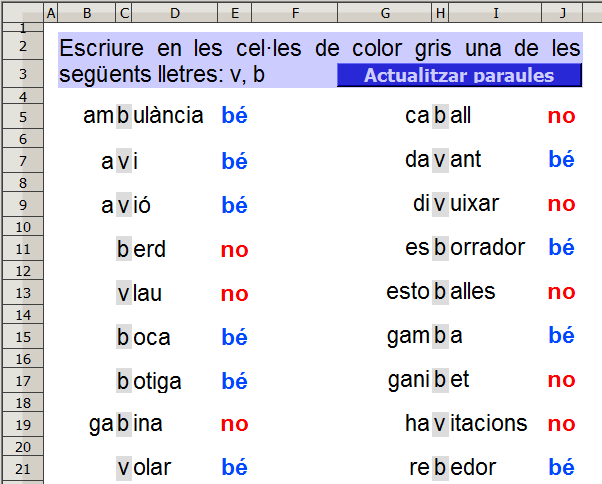
Generant fitxes
Es tracta de crear fitxes per practicar l'ortografia de les lletres. En aquesta fitxa concreta es treballaria la be(b)ila ve baixa(v). La posició de les paraules d'aquesta fitxa varia mitjançant una macro o premen les tecles
Ctrl+shift+F9. La substitució de les lletres a treballar per un un guió baix també es fa mitjaçant el full de càlcul.
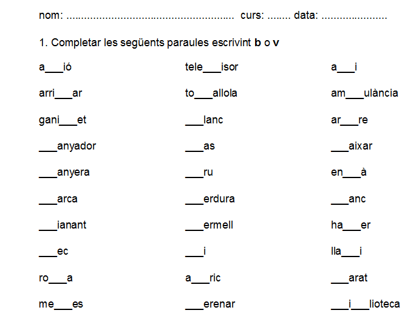
En aquesta fitxa es tracta de relacionar les lletres majúscules amb les minúscules. Les lletre minúscules es presenten desordenades de manera aleatòria mitjançant una macro amb la qual cosa es van generant fitxes no iguals en l'ordre
de les lletres minúscules. Evidentment també es podria fer que canviïn d'ordre les lletres majúscules. Les activitats de relacionar es poden aplicar en altres continguts (País-capital, vocabulari anglès-català, relacionar oracions
separades ….)
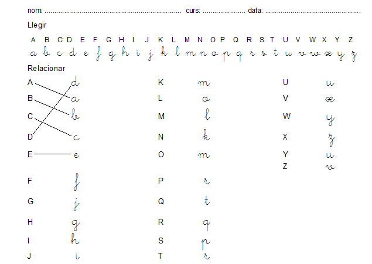
Horari
En aquesta activitat es tracta de contestar una pregunta en la qual el dia i l'hora són aleatòries per mig d'una macro (botó de prémer). De manera opcional també es pot fer que els llocs que ocupen les assignatures siguin
aleatòris presentant així una nova distribució horària.
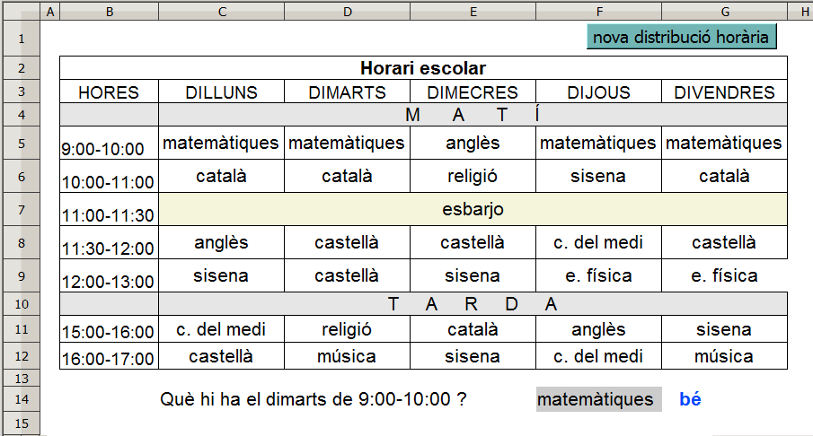
Classificacions
En aquesta activitat es tracta de classificar els noms dels animals que hi ha en el requadre en les corresponent columnes segons si són mamífers, aus, peixos o rèptils. L'activitat ha de funcionar correctament posant en qualsevol ordre
les paraules que pertanyen a un camp semàntic o columna corresponent. La macro "Actualitzar" esborrarà les paraules escrites del rang B10:E13 i presentarà una nova distribució de les paraules que
hi ha al requadre. La macro es podria ampliar fent mostrar noves paraules al requadre. Opcionalment es pot fer que es mostri un missatge d'avís en cas que la paraula que s'escrigui no en sigui cap de les que hi ha al requadre.
Pel que fa a l'avalució de l'activitat, es pot fer que s'avaluï quan s'hagin escrit totes les paraules o que s'avaluiï per columnes així com es vagin completant.
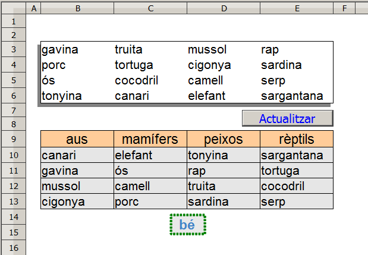
Temps cronològic
Amb aquesta activitat es mostren les diferències de temps que hi ha en els participants d'una cursa en bicicleta.
Amb el full de càlcul es pot gestionar informació (dades) relacionada amb l'Educació Física (pes, alçada, edat …).
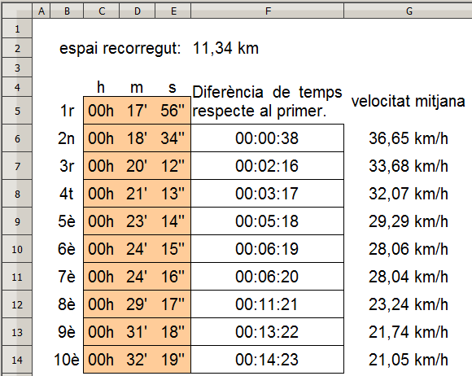
Dies de la setmana
Amb aquesta activitat, cada vegada que es fa clic al botó de prémer es presenta un pregunta relacionada amb els dies de la setmana i amb els conceptes d'ahir, abans-d'ahir, demà,
demà passat …
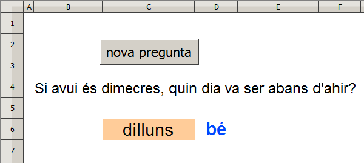
Ordenar paraules
Aquesta activitat serveix per fer fitxes de paper i presentar de manera desordenada-aleatòria les paraules d'una oració perquè l'alumne les escrigui ordenades. Es pot presentar en format de paper o en format digital. Observar que
les oracions poden tenir diferent número de paraules.
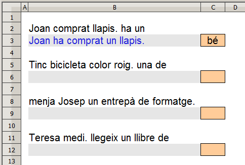
De fet, es podria fer l'activitat amb oracions de més de nou paraules i on cada oració podria tenir diferent número de paraules fent algunes modificacions i afegint algunes fórmules. Amb format de fitxa de paper, podria ser així:
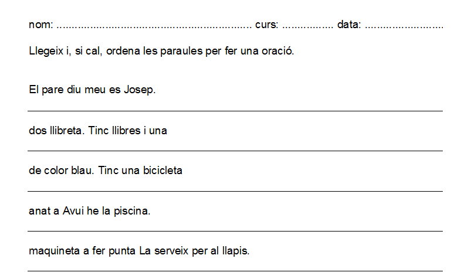
Ordenar oracions
En aquesta activitat es tracta d'ordenar una serie d'oracions que es presenten de manera desordenada cada vegada que es fa clic a la macro. Per ordernar-les, s'escriuen els números adients en les cel·les del rang
B3:B7 (cel·les de color taronja). En escriure un número en alguna d'aquestes cel·les, la frase es van presentant de manera automàtica a la cel·la corresponent del rang E3:E7. En fer bé l'ordre de
les frases, llavors es mostra l'avaluació de l'activitat a la cel·la E1.
Aquesta activitat també podria servir per ordenar paràgrafs, per exemple.
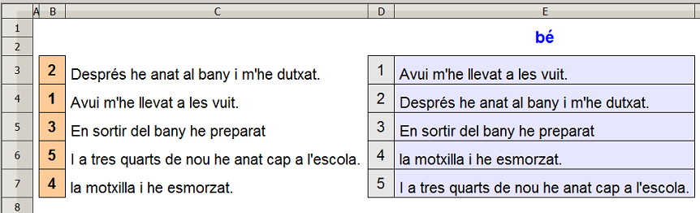
El cos
En aquesta activitat es tracta d'escriure el nom de les parts del cos que s'indiquen. Opcionalment es poden escoltar aquests noms.
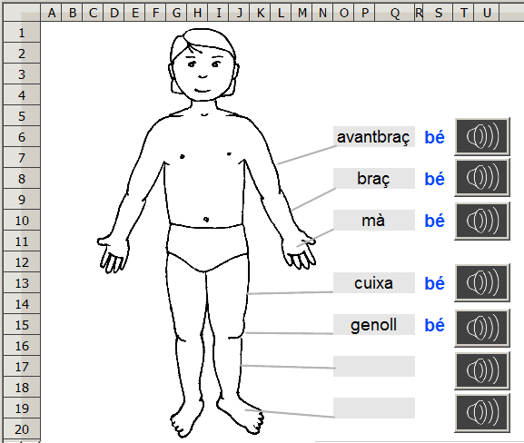
Parells ordenats
Aquesta activitat pot servir per practicar els parells ordenats (punts) en un sistema de coordenades. De manera aleatòria els valors x i y van canviant i són representats mitjançant un diagrama del tipus
XY (dispersió) d'opció Punts i línies. Llavors es tracta d'escriure els parell ordenats que representen els punts de dades del diagrama.
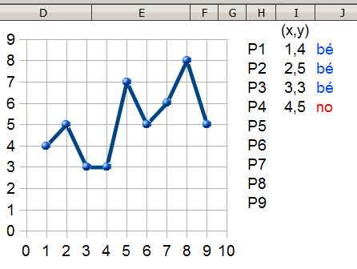
Multiplicar polinomi
Amb aquesta activitat es pot practicar la multiplicació d'un polinomi i practicar els signes (positiu o negatiu).
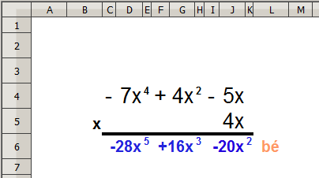
Conjugar verbs 1
Amb aquesta activitat es pot practicar el conjugar verbs triats d'una llista verbs, que potser aleatòria o no, que hi ha a la cel·la E4.
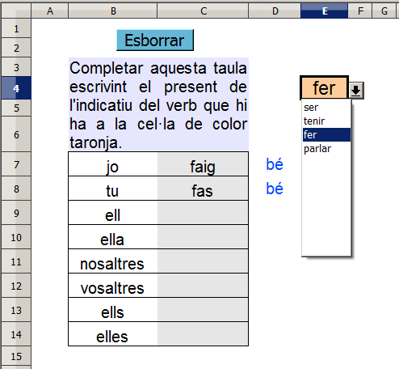
Conjugar verbs 2
Aquesta activitat es semblant a l'anterior, però el subjecte i el verb, que està entre parèntesis, van canviant aletòriament.
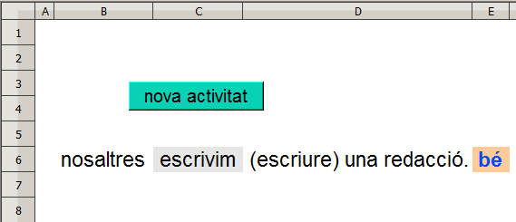
Descomposició factorial
En aquesta activitat, es fa la descomposció factorial del número que hi ha a la cel·la D4 que pot ser escrit direcament o fent clics en un dels extrems de la barra de desplaçament.
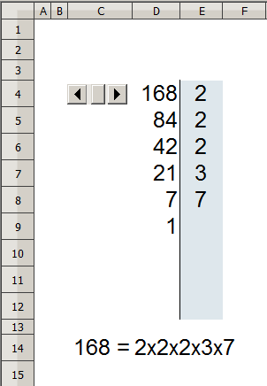
Expressió escrita d'una fracció
Com a complement, es podria intentar fer que es mostri l'expressió gràfica (diagrama) de la fracció en cas que aquesta s'hagi escrit bé en lletra.
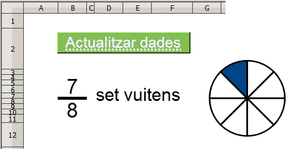
En aquesta activitat es pot fer expressar de manera més detallada el significat de la fracció.
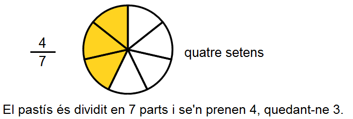

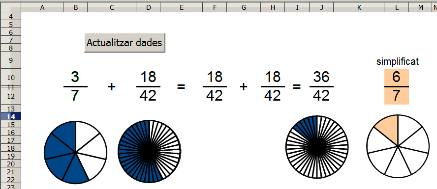
Operacions amb les unitat de temps
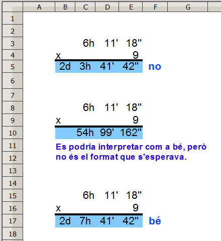
Seleccionar paraules
Amb aquesta activitat es tracta de seleccionar unes paraules que tinguin una o unes determinades lletres d'un llistat de paraules. Aquesta selecció de paraules es presentarà de manera ordenada amb la qual cosa caldrien dues macros: una
per fer la selecció i l'altra per ordenar les paraules seleccionades. Es podria fer amb un sol clic d'una macro que a la vegada cridaria a una altra macro.
En aquest exemple, s'han triat les paraules que tinguin la ce trencada (ç) d'un determinat llistat de paraules. També es pot fer que es presentin paraules que tinguin les lletres be alta i erra (br) o qualsevol altra combinació i
així facilitar la cerca de paraules que ens interessi per treballar a nivell oral (expressió) o escrit (ortografia).
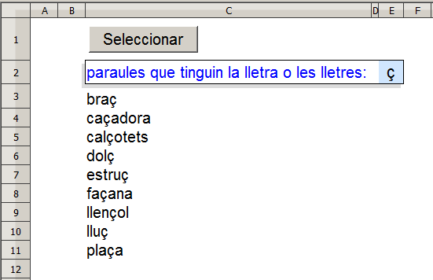
Les potències
Amb aquesta activitat es practiquen les potències. A "l'inrevés" es podria intentar fer una activitat per calcular mentalment l'arrel cúbica de números petits.
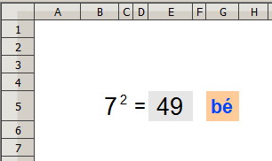
Sistema de numeració decimal
Aquesta activitat presenta un dígit en vermell d'un número aleatori amb la qual cosa potser que resalti un digít corresponent a la unitat, la desena, la centena, la unitat de miler, la desena de miler o la desena de miler.
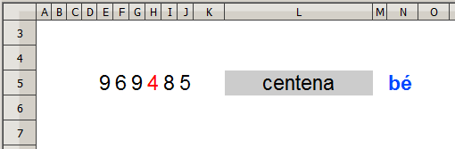
Matrius
Amb la fórmula matricial es calculen diversos valors de manera simultània.
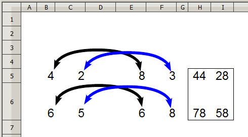
Ordenar síl·labes
Amb aquesta activitat es tracta d'ordenar les síl·labes desordenades d'una paraula. Es podrien fer pràctiques amb paraules que tinguin "ny", "l·l", "rr" …
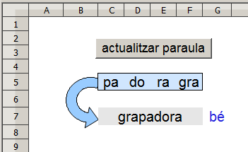
Lectura col·lectiva
Aquesta pràctica pot servir per fer lectura col·lectiva de les lletres de l'alfabet. Es tracta de presentar una lletra de mida molt gran (tipus de lletra: arial, mida: 200 o més) perquè pugui ser vista a nivell d'aula. La mateixa
activitat es podria fer amb la lectura dels números. Aquests números es podrien presentar de manera aleatòria i dintre dels intervals que ens interessi.
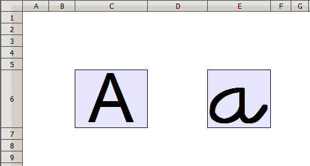
Els colors
Aquesta activitat servei per treballar els colors. Es van canviant el colors així com es va fent clics als extrems de la de barra de desplaçament.
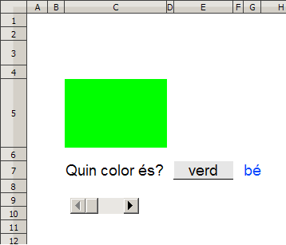
Comptar (concepte de número)
Fent clic al botó de prémer es va mostrant un número aleatori de dibuixets. Llavors l'alumne escriu el nombre d'aquests dibuixets.
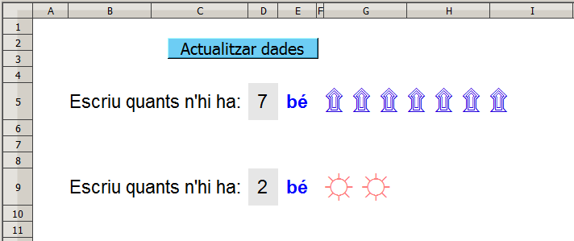
Múltiples
Es tracta d'escriure la ics a sota de cada número de la taula que sigui múltiple del número que hi ha en l'expressió "multiple de …"
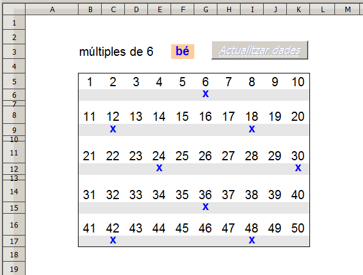
Decimal, binari i hexadecimal
Aquesta activitat és un convertidor de decimal a binari i a hexadecimal. Evidentment, també es podria fer convertir de binari i decimal.
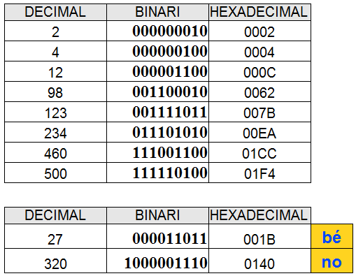
Sèries comparatives
Aquesta activitat té per objectiu treballar els operadors comparatius. Fent clic a la macro, s'esborren els números que hi ha a les cel·les de color gris perquè s'escriguin els números adients per confirmar les series
comparatives. També es podria fer a l'inrevés, és a dir, actualitzar els números de les cel·les de color gris mitjançant uns aleatoris i esborrar els operadors comparatius perquè siguin escrits els adients per confirmar les sèries
comparatives.
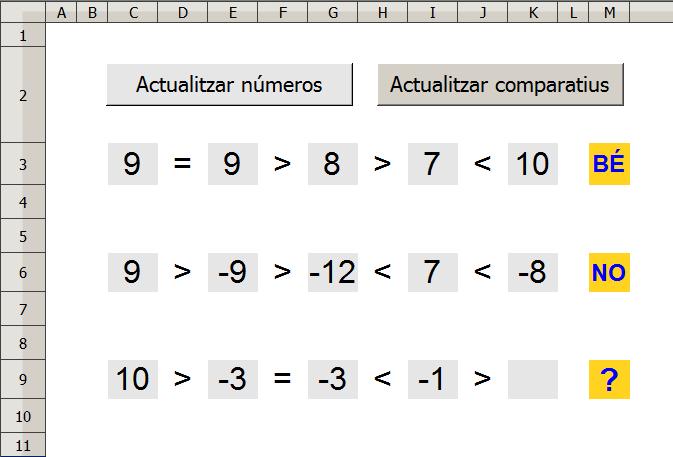